Loading...
Food Menu
Food Menu
Most Popular Items
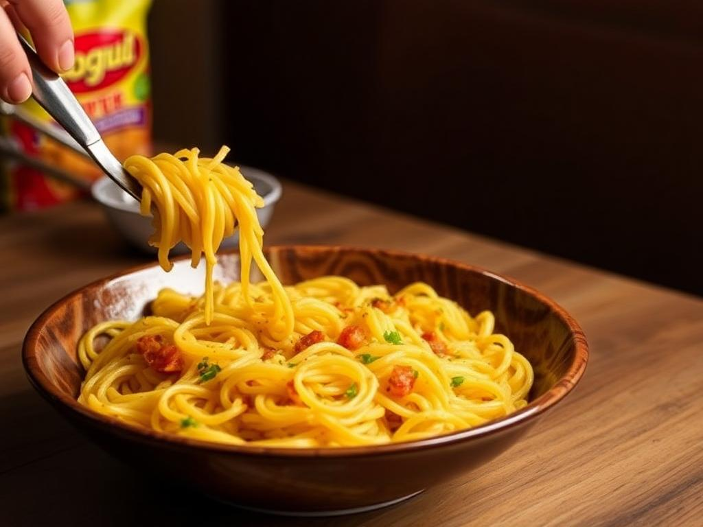
Veg Masala Maggi Rs:120/
Veg Masala Maggi is a flavorful snack made by cooking Maggi noodles with fresh vegetables like carrots, peas, and capsicum, enhancing taste and nutrition. Blended with Maggi’s signature masala, it offers a spicy, tangy flavor that’s quick to prepare and perfect for satisfying hunger cravings anytime. A true comfort food!
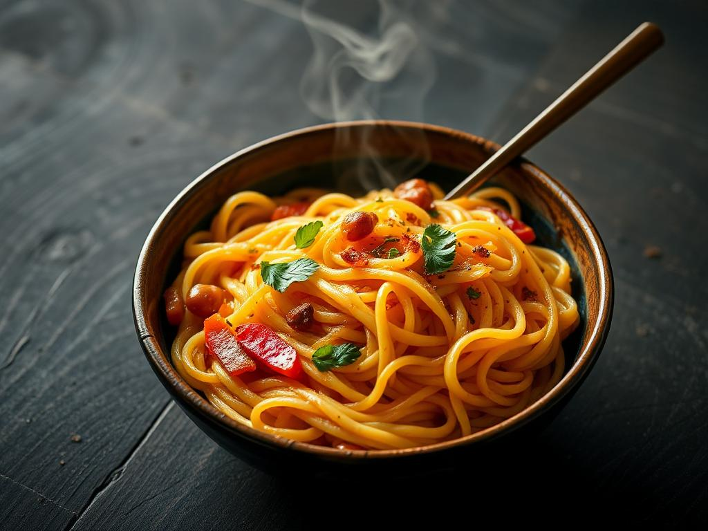
Veg Noodles Rs:130/
Veg Noodles are a delicious and wholesome dish made by stir-frying noodles with fresh vegetables like carrots, capsicum, cabbage, and beans. Seasoned with a blend of soy sauce and spices, they offer a perfect balance of flavors. Quick to prepare, they are a favorite for a satisfying meal or snack.
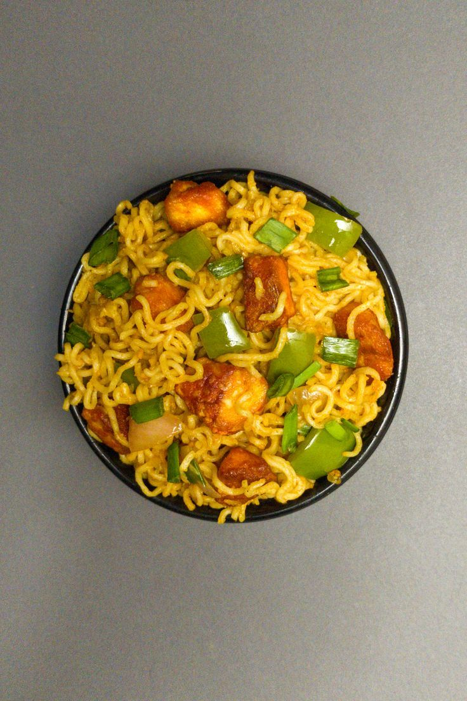
Sweet Corn Maggi Rs:100/
Sweet Corn Maggi is a delightful twist on classic Maggi noodles, blending the sweetness of juicy corn kernels with Maggi’s signature masala. Quick to prepare, it offers a perfect balance of sweet and spicy flavors. This comforting and flavorful snack is ideal for satisfying cravings anytime, making it a favorite treat!
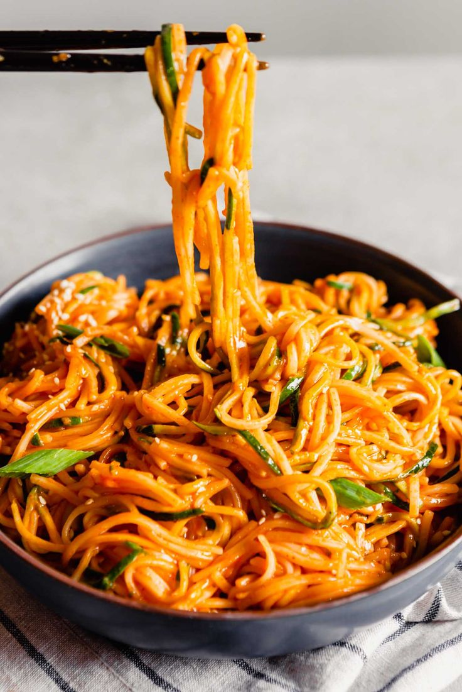
Veg Mushroom Noodels Rs:150/
Veg Mushroom Noodles are a flavorful fusion dish made by stir-frying noodles with fresh vegetables and tender mushrooms. Infused with soy sauce, garlic, and spices, this dish offers a savory, umami-rich taste. Quick to prepare and packed with nutrients, it's a perfect choice for a hearty and delicious meal.
Onion Maggi Rs:100/
Onion Maggi is a simple yet flavorful dish made by cooking Maggi noodles with sautéed onions and Maggi’s signature masala. The caramelized onions add a sweet and savory depth to the dish, enhancing its taste. Quick to prepare, it's a comforting and delicious snack for any time of the day!
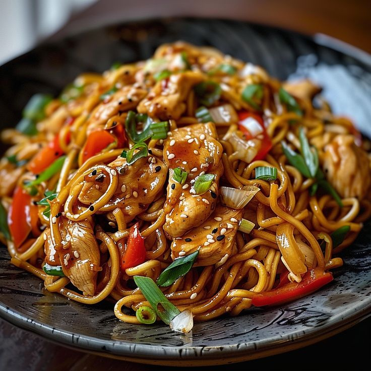
Hokka Noodles Rs:140/
Hakka Noodles are a popular Indo-Chinese dish made by stir-frying boiled noodles with fresh vegetables like cabbage, carrots, and bell peppers. Flavored with soy sauce, chili sauce, and aromatic spices, they deliver a delightful mix of savory and tangy flavors. Perfect as a quick meal or a party favorite!Veg Cheese Noodels Rs:150/
Veg Cheese Noodles are a creamy and flavorful dish made by tossing noodles with fresh vegetables and melting cheese. Seasoned with spices and sauces, the gooey cheese adds richness, complementing the crunch of veggies. Quick to prepare, this indulgent treat is perfect for satisfying cravings and makes a hearty meal.
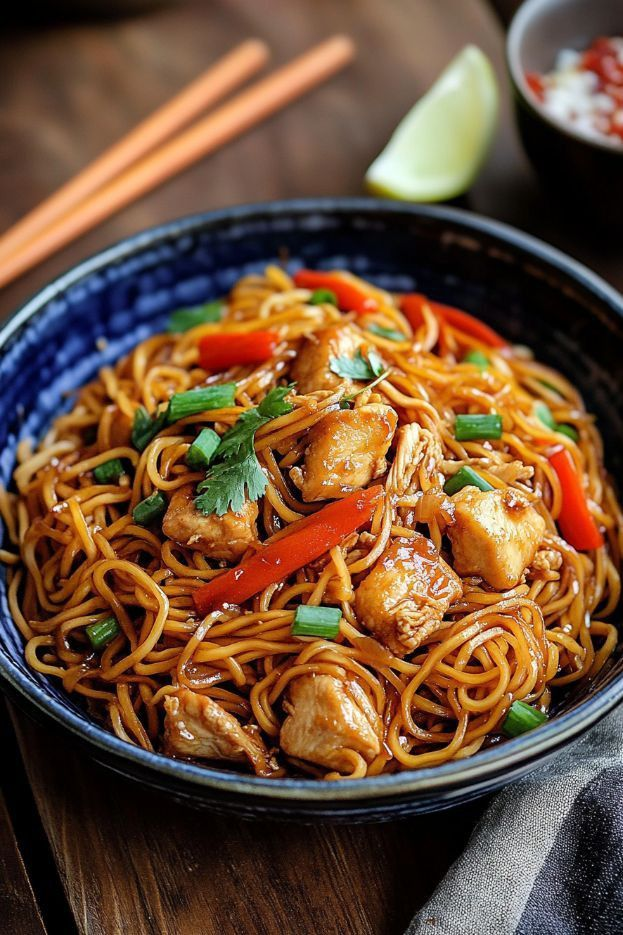
Veg Paneer Maggi Rs:130/
Veg Paneer Maggi is a delicious twist on classic Maggi noodles, combining fresh vegetables and soft paneer cubes. Cooked with Maggi’s signature masala , it offers a flavorful blend of spices, creamy paneer, and crunchy veggies. Quick to prepare, it’s a hearty and satisfying snack or meal for any time!
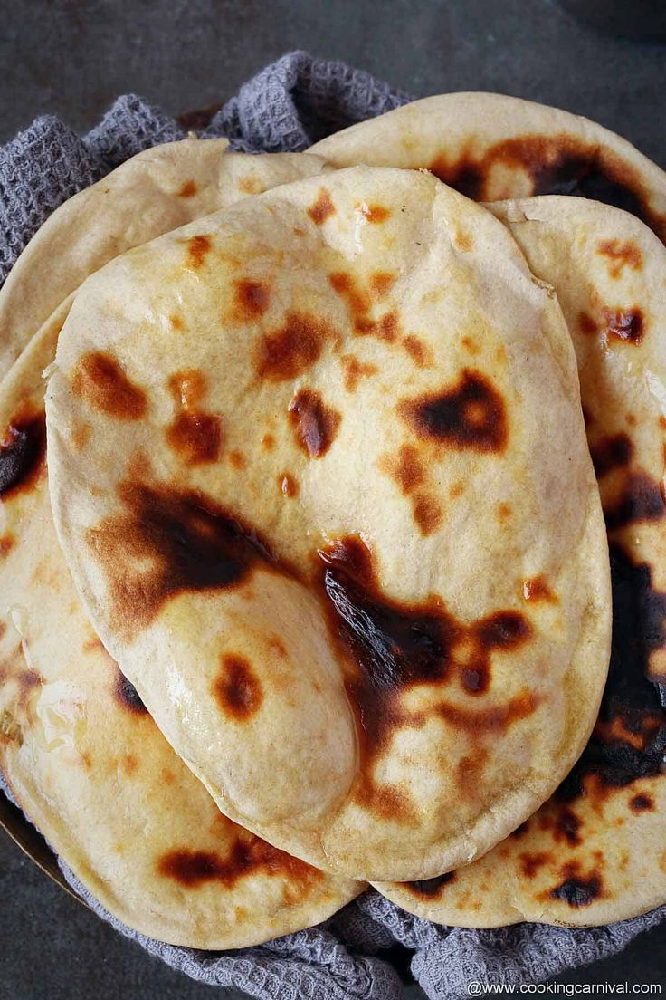
Chapati Rs:6/
Chapati are a creamy and flavorful dish made by tossing noodles with fresh vegetables and melting cheese. Seasoned with spices and sauces, the gooey cheese adds richness, complementing the crunch of veggies. Quick to prepare, this indulgent treat is perfect for satisfying cravings and makes a hearty meal.
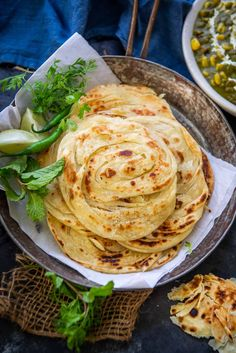
Tawa Roti Rs:12/
Tawa Roti is a traditional Indian flatbread made from whole wheat flour, kneaded into a soft dough, and cooked on a hot tawa (griddle). Soft, healthy, and versatile, it pairs perfectly with curries, dals, or vegetables. Tawa Roti is a staple in Indian households, loved for its simplicity and wholesome taste.
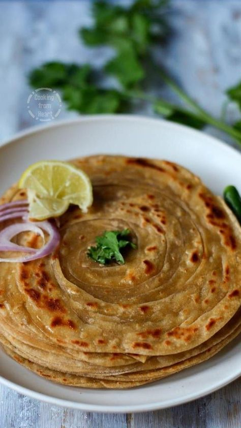
Aloo Paratha Rs:120/
Aloo paratha is a popular Indian flatbread made from whole wheat flour, stuffed with a spiced mixture of mashed potatoes. It is typically served hot with yogurt, pickles, or butter, making it a delicious and hearty breakfast option.
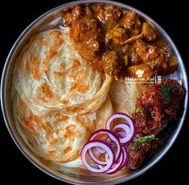
Butter Roti Rs:15/
Butter roti is a soft, unleavened Indian flatbread made from whole wheat flour. Cooked on a hot griddle, it is brushed with melted butter, enhancing its flavor and richness. Often served alongside curries or lentils, butter roti is a staple in Indian cuisine, loved for its simplicity and comforting taste.
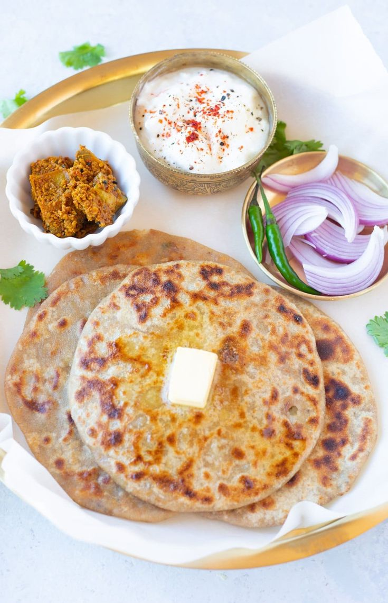
Paneer Paratha (2pc)/Rs:140/
Paneer paratha is a delicious Indian flatbread stuffed with spiced paneer (Indian cottage cheese). Made from whole wheat flour, it is rolled out and cooked on a hot griddle until golden brown. Often served with yogurt, pickles, or chutney, paneer paratha is a popular and nutritious meal option.Lachha Roti Rs:30/
Lachha roti is a traditional Indian unleavened flatbread known for its flaky, layered texture. Made from whole wheat flour, it is rolled multiple times to create distinct layers before being cooked on a hot griddle. Often enjoyed with curries or dals, lachha roti is cherished for its delightful taste and versatility.Onion Paratha (2p)/Rs:100/
Onion paratha is a flavorful Indian flatbread stuffed with a spiced mixture of finely chopped onions, herbs, and spices. Made from whole wheat flour, it is rolled out and cooked on a hot griddle until golden brown. Served with yogurt or pickles, onion paratha is a delicious and satisfying meal.
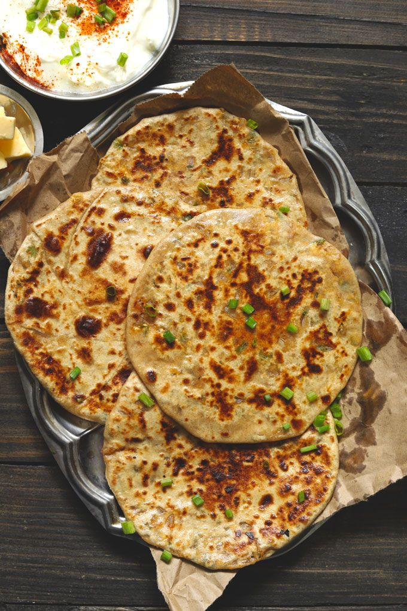
Flaky Roti Rs:20/
Flaky roti, also known as "paratha," is a layered Indian flatbread made from whole wheat flour. Its unique texture is achieved by rolling and folding the dough multiple times before cooking on a hot griddle. Flaky roti is often enjoyed with curries, vegetables, or yogurt, making it a versatile and delicious dish.Capsicum Burger Rs:120/
Aloo tikki burger is a delicious fusion dish featuring a spiced potato patty, known as aloo tikki, sandwiched between soft burger buns. Often garnished with fresh lettuce, tomatoes, and tangy chutneys, this vegetarian burger offers a satisfying crunch and flavorful experience, making it a popular street food choice in India.
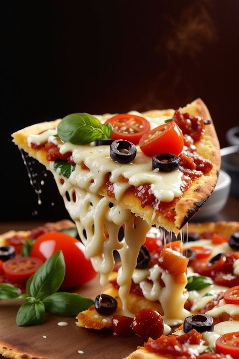
Veg Overloaded Pizza Rs:200/
Veg overloaded pizza is a delightful dish topped with a generous assortment of fresh vegetables, such as bell peppers, onions, mushrooms, and olives, all layered on a cheesy base. Baked to perfection, this pizza offers a burst of flavors and textures, making it a favorite among vegetarian pizza lovers.
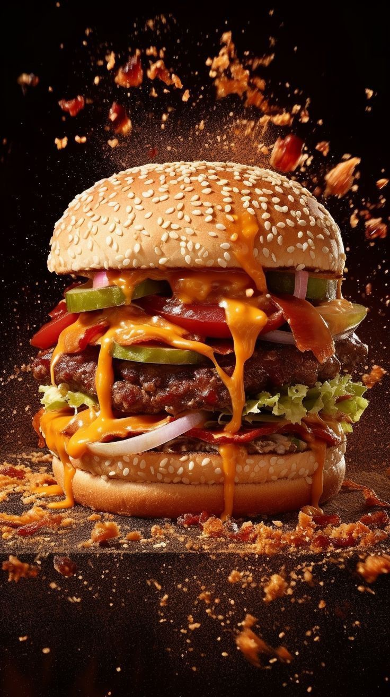
Aloo Tikki Burger Rs:100/
Aloo tikki burger is a delicious fusion dish featuring a spiced potato patty, known as aloo tikki, sandwiched between soft burger buns. Often garnished with fresh lettuce, tomatoes, and tangy chutneys, this vegetarian burger offers a satisfying crunch and flavorful experience, making it a popular street food choice in India.
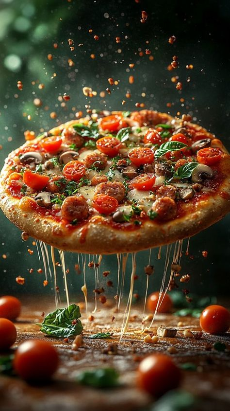
Paneer Pizza Rs:270/
Paneer pizza is a delightful Indian twist on the classic pizza, featuring a crispy crust topped with tangy tomato sauce, melted cheese, and cubes of marinated paneer. Often garnished with bell peppers, onions, and spices, this vegetarian pizza offers a rich flavor profile, making it a favorite among cheese lovers.Cheese Burger Rs:120/
A cheese burger is a classic American sandwich featuring a juicy beef patty topped with melted cheese, typically cheddar. Served in a soft bun, it often includes lettuce, tomato, pickles, and condiments like ketchup and mustard. This indulgent dish is beloved for its rich flavors and satisfying combination of textures.
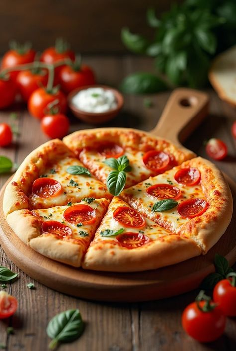
Corn Capsicum Pizza Rs:270/
Corn capsicum pizza is a vibrant and flavorful dish featuring a crispy crust topped with sweet corn and colorful bell peppers (capsicum). Enhanced with tangy tomato sauce and melted cheese, this vegetarian pizza offers a delightful combination of textures and tastes, making it a popular choice for pizza lovers.
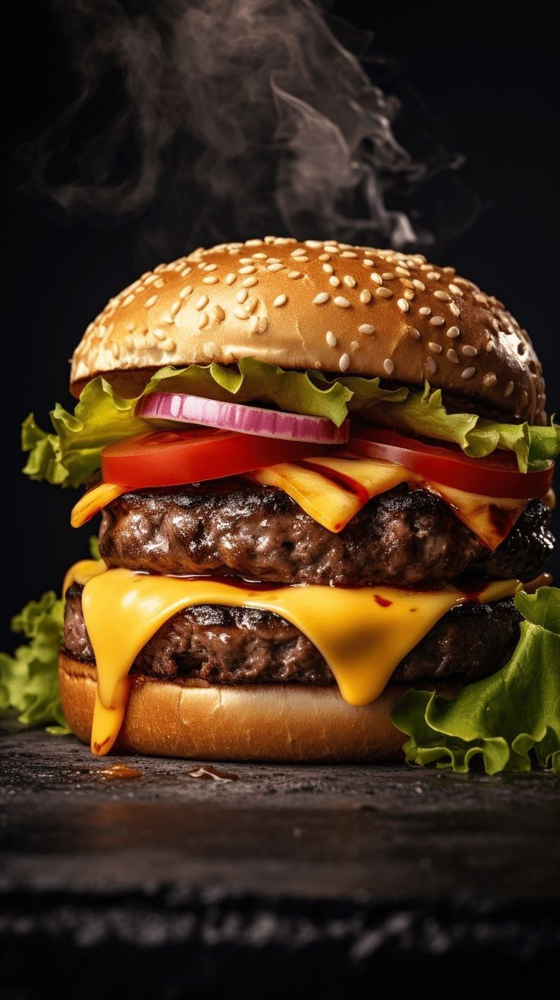
Paneer Burger Rs:160/
A paneer burger is a delicious vegetarian alternative to traditional burgers, featuring a spiced paneer patty made from Indian cottage cheese. Sandwiched between soft burger buns, it is often topped with fresh lettuce, tomatoes, onions, and tangy sauces. This flavorful burger is a favorite for its rich taste and satisfying texture.
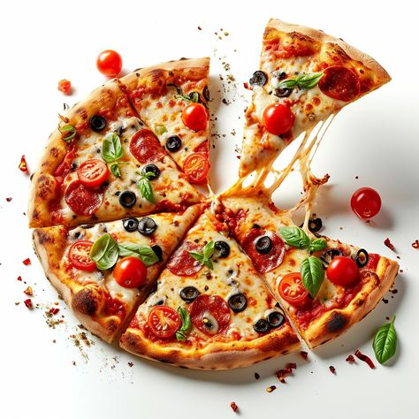